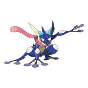
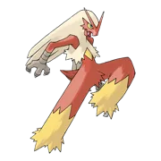

Move your three choices from the party into Boxes. In Boxes, press X twice to switch to Battle Teams, then register them. Check this season’s eligible Pokémon and held-item limits.
Z-A BATTLE CLUB / ONLINE RANKEDBattle for the
Battle for the
Mega Stones.
Four Trainers, three minutes, one promotion ladder. Season X runs from 13 November 2026 at 06:00 UTC to 11 December 2026 at 01:59 UTC. Details checked 18 November 2026; the next season may change them.
Online requirement
Ranked Battles require internet, a Nintendo Account and a paid Nintendo Switch Online membership. Mystery Gifts in the rewards section do not require the paid membership. Availability varies by region.
Press X for the main menu, then Link Play → Ranked Battles. Choose your team and press A to begin matchmaking. Season X celebrates Xerneas and X-named Mega Evolutions.
Placement and battle actions earn points. When you fill a rank, the next promotion and its rewards unlock. Your rank cannot fall within the season; it resets to Z when the next season starts.
SEASON X / PROMOTION REWARDS
The seven Mega Stones.
These stones are awarded as you reach the listed rank. A stone you already own cannot be claimed again. They are planned to return in future seasons; check the current in-game reward list after 11 December.

GreninjiteReach Rank Y · Greninja

DelphoxiteReach Rank X · Delphox

ChesnaughtiteReach Rank W · Chesnaught

BaxcalibriteReach Rank V · Baxcalibur

SceptiliteReach Rank U · Sceptile

SwampertiteReach Rank T · Swampert

BlazikeniteReach Rank S · Blaziken
THREE WAYS TO EARN
Match, promotion, season.
Battle rewards follow a completed match regardless of placement. Promotion rewards arrive when you rise to a rank, including the Mega Stones above. Season rewards depend on your finishing rank; play at least one match to qualify, then open Link Play → Ranked Battles after the season ends to collect them.
Season X · finishing reward
| Final rank | Mega Shards |
|---|---|
| A | 300 |
| B–E | 200 |
| F–R | 100 |
| S or below | 50 |
SEASON X / SPECIAL BALLS
More than Mega Stones.
At Rank X, promotion includes Sport, Safari, Dream and Beast Balls. Higher ranks give more of these, while mid ranks offer Fast, Friend, Level, Heavy, Love, Moon and Lure Balls. The special ball distribution is for this season; check the in-game rank list for exact quantities.
First attack, first Mega Evolution, first item pickup and repeated super-effective hits can contribute points. Win the fights you can, but keep picking up safe scoring chances.
Green pickups restore the team; red boosts attacks; blue boosts defenses; Mega Power orbs help you transform. Do not chase a pickup through an unsafe three-way fight.
Knockouts decide placement. You can switch your active Pokémon three times until a faint resets that limit. A knocked-out team re-enters fully healed, so keep battling through the timer.
Ranked-only stones do not normally drop in the regular story. A Pokémon using one is not required to finish the Mega Evolution Pokédex. The season rules, eligible Pokémon and rewards are shown in the game before you queue.
Mystery Gifts and hidden rewards ↗Season X team eligibility in detail
The printed three-page guide says to check eligible Pokémon and held items before registering. This additional rule summary is independently verified from Season X notices, not text taken from the owner’s PDF.
Eligible Pokédex entries
Lumiose Nos. 001–228, 231 and 232; Hyperspace Nos. 001–127, 131 and 132. Do not register two Pokémon with the same Pokédex number.
Levels and held items
Choose three Pokémon from levels 1–100; each is set to Level 50 in battle. Held items cannot be duplicated. Non-Mega Stones are allowed; the permitted Mega Stone exceptions are Raichunite X, Charizardite X and Mewtwonite X.
Season-specific verification: 13 November 2026 Battle Club Season X notice, reported by Pocket Monsters, and Serebii’s Season X reference. These restrictions expire or change with the next season—always inspect the in-game eligibility screen before queueing.